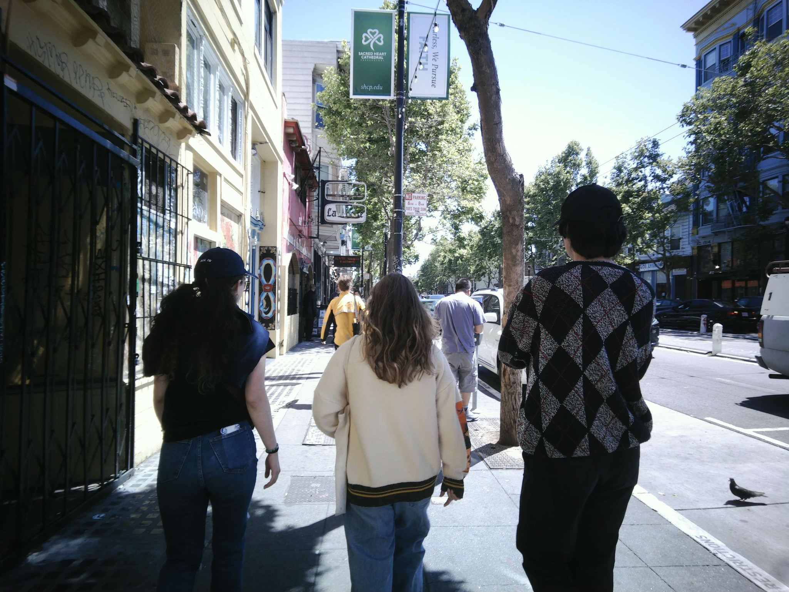

Latest Event

Day Trip to San Francisco
San Francisco, CA
Date: 25 May 2024
I recently went out to the great city of San Francisco with a few friends. We try to go out and explore the area around Davis everyonce and a while to just get a feel for the Bay Are beyond our little college town.